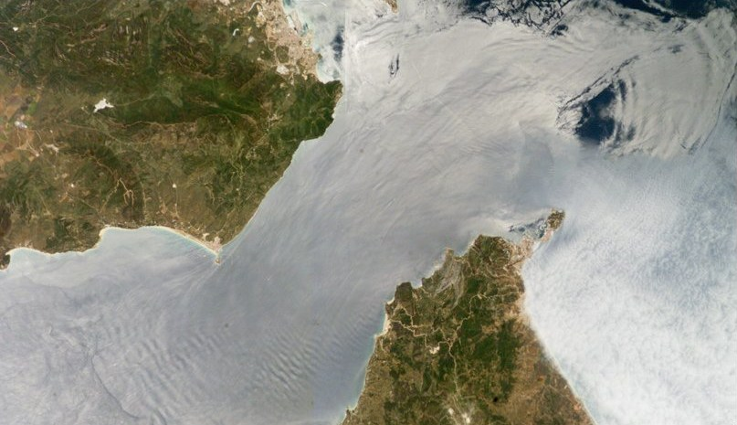

Las olas que vemos viajan por la superficie del agua, en la frontera con el aire. Pero también hay olas que viajan por dentro del océano o de la atmósfera, sin que la superficie se mueva casi nada. Aparecen cuando el fluido está en capas, más denso abajo que arriba: se llaman ondas internas.

Un fluido en capas
David Tong, de la Universidad de Cambridge, empieza con una aclaración con humor: las «ondas de gravedad» de la mecánica de fluidos no son las ondas gravitacionales del espacio-tiempo, sino el fenómeno mucho más cotidiano de fluidos que suben y bajan por efecto de la gravedad [1]. Las olas de la superficie son un ejemplo; las ondas internas viajan en cambio por el interior del fluido [1].
Para que existan, el fluido tiene que estar estratificado: su densidad tiene que cambiar con la altura [1]. Es lo que pasa en el océano, donde el agua es más densa abajo que arriba [1], o en la atmósfera.
La frecuencia de flotación
Tong propone imaginar una pelotita sumergida en un fluido estratificado, con la misma densidad que el fluido que la rodea [1]. Si se la sube un poco, queda rodeada de fluido más liviano y su peso la hace bajar; si se la baja, queda rodeada de fluido más denso y el empuje la hace subir. Si el fluido es más denso abajo, la pelotita oscila alrededor de su posición de equilibrio con movimiento armónico simple, con una frecuencia N [1]:
N: frecuencia de flotación, o de Brunt–Väisälä · g: gravedad · ρ0: densidad de referencia · dρ/dz: cómo cambia la densidad con la altura
Cuanto más rápido cambia la densidad con la altura, más alta es la frecuencia. Las ondas internas son ese mismo vaivén, pero del propio fluido [1].
El corcho en el aceite: en una botella con agua abajo y aceite arriba, un objeto que flota justo en la frontera, si lo empujás hacia abajo, vuelve; si lo levantás, cae. Rebota arriba y abajo alrededor de la frontera. Una onda interna es una fila de porciones de fluido haciendo ese vaivén, cada una un poco desfasada de la vecina, de modo que la ondulación avanza.
![Infografía «Ondas internas: la pelotita que oscila». Un tanque con agua más liviana arriba y más densa abajo, y una pelotita en el medio con flechas hacia arriba y hacia abajo. Tres recuadros: «La subís: queda rodeada de agua más liviana y su peso la hace bajar», «La bajás: queda rodeada de agua más densa y el empuje la hace subir», «Resultado: oscila con la frecuencia de flotación N». La fórmula N² = −(g/ρ₀) dρ/dz. Una fila de pelotitas en una ondulación: «una onda interna: muchas porciones oscilando, cada una un poco atrasada respecto de la vecina». Pie: «Basado en D. Tong, Lectures on Fluid Mechanics, §4.2».](img/mecanica-fluidos/ondas-internas-infografia.jpg)
Una onda que nunca es más rápida que N
Tong obtiene la relación de dispersión de estas ondas [1]:
ω: frecuencia de la onda · kx, kz: componentes horizontal y vertical del número de onda
Dos consecuencias llaman la atención. Primero, la frecuencia de una onda interna nunca supera la frecuencia de flotación N [1]. Segundo, la frecuencia no depende del tamaño de la onda, sino de su dirección: cuanto más vertical es el vector de onda, más lenta es la oscilación [1]. En el caso extremo de una onda cuyas crestas son verticales, el fluido sube y baja exactamente con la frecuencia N [1].
La energía va de costado
La mayor sorpresa, dice Tong, aparece al calcular la velocidad de grupo, la velocidad a la que viajan los paquetes de ondas y la energía [1]. Resulta perpendicular a la dirección de la onda: la energía viaja de costado respecto de la dirección en que avanzan las crestas [1]. Tong aclara que es menos sorprendente cuando uno se da cuenta de que la velocidad de grupo es paralela a la velocidad del fluido [1]: en una onda interna, el fluido se mueve a lo largo de las crestas, no a través de ellas.
Grandes y lentas: como la diferencia de densidad entre las capas del océano es pequeña, la fuerza que devuelve el agua a su lugar es débil, y las ondas internas pueden tener amplitudes enormes y moverse despacio (un razonamiento a partir de la frecuencia de flotación: un cambio de densidad chico da un N chico). Las ondas internas también son parientes de las inestabilidades de un fluido en capas, como la de Rayleigh-Taylor, que aparece cuando la estratificación está al revés: lo denso arriba [1].
En un fluido estratificado, más denso abajo, cada porción de fluido que se desplaza oscila con la frecuencia de flotación N. Las ondas internas son ese vaivén organizado: viajan por dentro del océano o de la atmósfera, nunca oscilan más rápido que N, su frecuencia depende de su dirección y su energía viaja de costado respecto de las crestas. Son olas que existen sin que la superficie lo note.
Pregunta para la comunidad: Si en un fluido la densidad no cambia con la altura, ¿cuánto vale la frecuencia de flotación? ¿Puede haber ondas internas en ese fluido? ¿Y si la densidad aumenta hacia arriba?
Referencias
- D. Tong, Lectures on Fluid Mechanics, apuntes de clase, Universidad de Cambridge (DAMTP), §1.1.3 «Conservation of Mass» y §4.2 «Internal Gravity Waves». damtp.cam.ac.uk